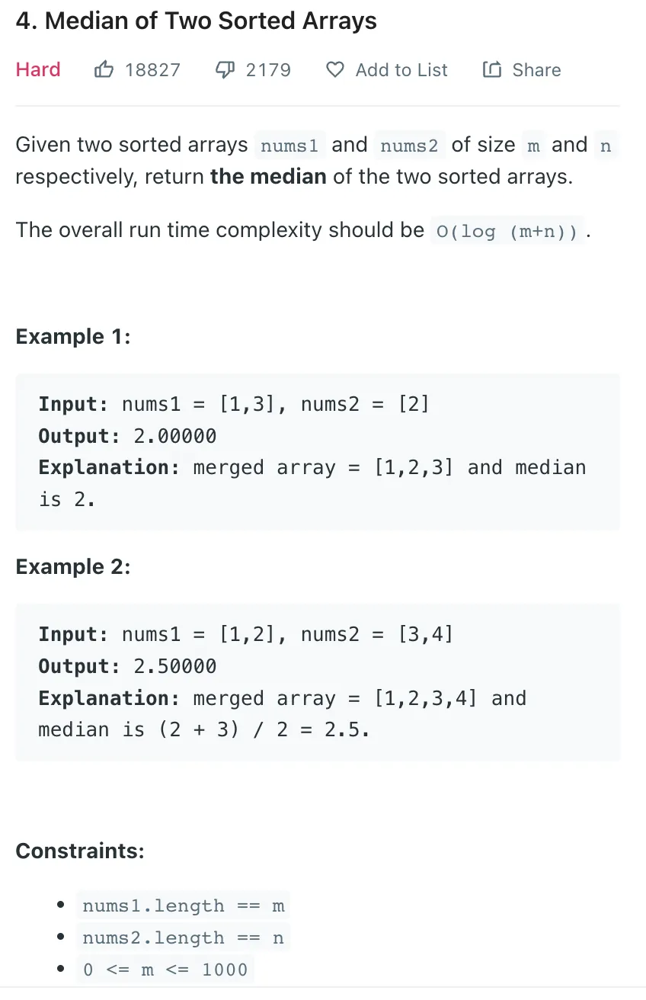
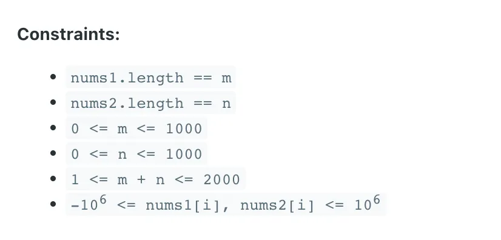

4. Median of Two Sorted Arrays
考過的公司：Shopee、Amazon、Bytedance
Question


✍🏽 My Solution
Runtime: 2 ms, faster than 100.00% of Java online submissions for Median of Two Sorted Arrays. Memory Usage: 42.7 MB, less than 99.87% of Java online submissions for Median of Two Sorted Arrays.
class Solution {
public double findMedianSortedArrays(int[] nums1, int[] nums2) {
int m = nums1.length;
int n = nums2.length;
if (m == 0 && n == 0) return 0;
// merge arr
int[] arr = mergeArr(nums1, nums2, m, n);
int len = arr.length;
if (len == 1) {
return arr[0];
}
int left = 0;
int right = len-1;
int mid = left + (right-left) / 2;
if (len % 2 == 0) {
Double a = Double.valueOf(arr[mid]+arr[mid+1]);
return Double.valueOf(a / 2);
} else {
return Double.valueOf(arr[mid]);
}
}
private int[] mergeArr(int[] nums1, int[] nums2, int m, int n) {
int i = 0;
int j = 0;
int k = 0;
int[] res = new int[m+n];
while (i < m && j < n) {
if (nums1[i] < nums2[j]) {
res[k] = nums1[i];
i++;
} else {
res[k] = nums2[j];
j++;
}
k++;
}
while (i < m) {
res[k] = nums1[i];
i++;
k++;
}
while (j < n) {
res[k] = nums2[j];
j++;
k++;
}
return res;
}
}
🧠 Thought Process
- Why did I choose this particular implementation?
- 合併2個數組
- 找該合併數組的 mid，偶數將最中間的兩個除以2，奇數直接取 mid
- What is the time/space complexity of my solution? How do I know?
- time:O(m+n)
- space: O(m+n)
- 不符合題目要求的 log(m+n)
- What mistakes did I make?
- 雖然是自己寫的，但是是一直測試改測試改，改出來的XD